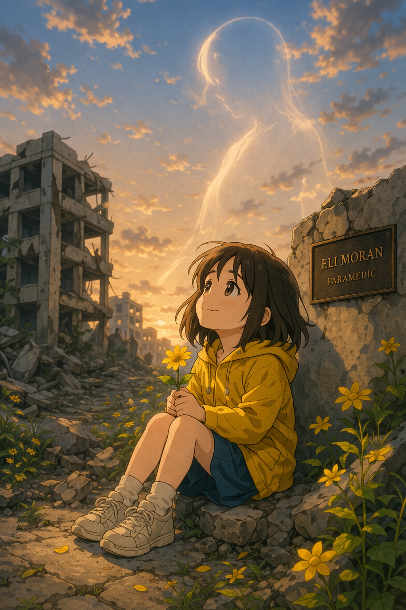

The building fell at 4:47 in the afternoon, when the sky above the city was the color of a bruise and the sparrows had already tucked themselves into the eaves of older, kinder buildings. It fell the way all terrible things happen. Not slowly enough to stop. Not quickly enough to be merciful.
Eli Moran heard it on the radio before he felt it in the ground. A low rumble first, like God clearing His throat, and then the dispatch voice, calm the way dispatch voices always are when the world is ending somewhere: Structural collapse. Residential. Multiple floors. All available units.
He was twenty eight years old. Brown eyes. Hands that shook a little when he hadn't eaten, which was often, because he always forgot. He had been a paramedic for six years. He kept a photograph of his mother taped inside his locker and a packet of peppermints in his breast pocket because a dying man had once told him that his breath smelled like coffee and Eli had never quite recovered from the idea that the last thing a man smelled on this earth was his coffee breath.
He was nobody's idea of a hero. He would have told you that himself.
The dust was still rising when he arrived. It hung in the air like something alive, something with lungs, and it turned the evening into a grainy, amber murk through which flashlight beams cut like the fingers of saints reaching down from old paintings. The rubble was enormous and everywhere. Concrete slabs the size of dining tables. Rebar twisted into dark, arthritic fingers. A child's shoe, pink, sitting upright on a pile of plaster dust as though someone had placed it there gently. As though someone had said, Wait here. I will come back for you.
No one was coming back for it.
Eli climbed in through a gap on the east side, where a hallway had partially survived and now formed a narrow, jagged tunnel into the body of the collapse. His team leader, Captain Marsh, told him to check the first thirty feet and come back. Eli nodded. He meant it when he nodded. He always meant the things he promised right up until the moment he broke them.
He crawled. The concrete pressed against his back and his knees and the dust filled his mouth with the taste of chalk and ruin. His flashlight caught things: a kitchen chair with three legs. A shattered picture frame with the photograph still inside, a family smiling at a beach, their faces cracked down the middle by broken glass. A clock on the ground, still ticking. He thought that was the worst thing he had ever seen, somehow. That the clock was still counting. That time had not had the decency to stop.
And then he heard her.
It was small. So small. Not a scream and not a cry but something in between, the sound a kitten makes when it is too young to meow properly, just a thin, wet note of confusion and pain rising up from somewhere beneath the floor.
He followed it on his belly, dragging himself forward through a space that grew tighter and tighter until the concrete kissed both his shoulders and he could feel his own heartbeat reflected back at him by the stone.
She was in what had been a living room. The ceiling had come down in a V shape, like two hands pressed together in prayer, and at the lowest point of the V, in a pocket of air no bigger than a bathtub, was a girl.
Six years old, maybe. Dark hair full of dust. One arm pinned beneath a slab of concrete from the elbow down. Her face was so pale it was almost blue, except for the blood on her forehead, which was very red and very bright, the way children's blood always is because they have so much life in them that even their wounds look vivid.
She looked up at him. Her eyes were enormous and dark and wet, the eyes of a creature who has not yet learned that the world can be this cruel and is only now, in this moment, receiving that terrible education.
"Hi," Eli said.
His voice came out wrong, cracked and too cheerful, the voice of a man standing at the edge of something he cannot name.
"Hi," she whispered back.
Her name was Sofia. She told him this in a voice like a small bell struck very softly.
"My arm is stuck," she said.
"I see that," Eli said. He examined the slab. It was enormous. Immovable. Not by him. Not by any one man. He tried anyway. He braced his boots against the far wall and pulled until his vision went white and his arms screamed and nothing happened. The concrete did not move. The concrete did not care.
He reached for his radio.
"I've got a child. Six years old. Pinned. I need heavy rescue and I need it now."
The radio crackled. Captain Marsh's voice came back thin and far away, like a man shouting across a frozen lake.
"Eli, that section is structurally gone. The whole east face is shifting. We are pulling back to the perimeter. You need to get out. Right now."
Eli looked at Sofia. She was watching him with those dark, enormous eyes, and in them he saw the thing he could not bear: trust. Complete and absolute and unearned. She trusted him because he was here. Because he was an adult and adults were supposed to fix things. Because she was six years old and had not yet learned that sometimes the people who show up cannot save you. Sometimes they can only be there.
He turned off the radio.
"Who was that?" Sofia asked.
"My friend," Eli said. "He says hi."
"Oh. Tell him I say hi back."
"I will."
He would not. He would never turn that radio on again.
Above them the building groaned. It was a living sound, the sound of a giant rolling over in its sleep, and with every groan, dust fell from the seams of their small stone world like sand from an hourglass that neither of them had asked for.
"Are you scared?" Sofia asked.
"A little," Eli said. He was terrified.
"I'm scared too," she said.
"That's okay. Brave people get scared. That's actually the rule. You can't be brave unless you're scared first. It's like how you can't have a rainbow unless it rains."
She thought about this.
"I don't like rain."
"Nobody does. But everybody likes rainbows. That's the deal."
The first hour was the hardest. Sofia cried, and her crying was the kind that breaks something inside your chest, not loud and wailing but quiet, a stuttering, hiccupping sound, the sound of a child trying very hard to be brave because a stranger told her that was the rule and she does not want to break the rule. Eli held her free hand. It was so small. He could feel every bone, every tiny knuckle, and he thought of bird skulls, of eggshells, of all the fragile things the world makes and then has the audacity to crush.
He told her about the penguin.
"There's a penguin," he said, "who lives at the South Pole, and his name is Captain Wobble, and he is the worst astronaut in the entire history of space."
"Penguins can't be astronauts."
"That's what everyone told him. But Captain Wobble didn't listen. He built a rocket ship out of ice and fish bones and he flew it all the way to the moon."
"What happened on the moon?"
"Well, the moon is made of cheese, right? Everyone knows that. And Captain Wobble is a penguin, and penguins eat fish, not cheese. So he got there and he looked around and he said, 'This is terrible. There's no fish anywhere. I want to go home.' And he flew home. The end."
She almost laughed. Almost. It came out as a sound halfway between a giggle and a wince, because her arm hurt and laughing moved her body and moving her body moved the thing that was crushing her. But she almost laughed, and Eli held onto that sound the way a drowning man holds onto a plank of wood.
"Tell me another one."
"Okay. So Captain Wobble decides that the moon was a mistake, and what he really wants to do is go to Mars..."
He told her about Captain Wobble for forty five minutes. He invented seventeen episodes. Captain Wobble went to Mars and found it too dusty. Captain Wobble went to Jupiter and it was too gassy. Captain Wobble went to Saturn and got his head stuck in the rings. Each story was dumber than the last and by the end Sofia was requesting specific plots.
"Make him go to a planet made of candy."
"Planet Candy. Of course. So Captain Wobble lands on Planet Candy, and the first thing he sees..."
In the second hour, he noticed the blood.
Not hers. His.
When he had crawled through the tunnel, a piece of rebar had caught him just below the ribs on his left side. He had felt it then, a hot, bright pain like a shout, but he had kept moving because Sofia's voice was ahead of him and pain is a negotiable thing when a child is crying in the dark. Now, sitting still, he felt it properly. A deep, slow, warm wetness spreading across his shirt beneath his jacket. He pressed his hand against it and his hand came away dark.
He did not tell her. He zipped his jacket up to his throat and leaned against the wall and kept talking.
"...and Captain Wobble said, 'I don't even like gummy bears,' which was a lie, because everyone likes gummy bears..."
The pain was a living thing now. It had a pulse. It had teeth. It sat inside him and chewed slowly and patiently, and Eli breathed through it the way he had been trained to breathe through everything, in through the nose, out through the mouth, steady, measured, like a man walking calmly through a house that is on fire because the children are upstairs and if he runs, they will hear his footsteps and they will know.
They must not know.
Around midnight, Sofia got cold. The temperature in their stone pocket had dropped, and she was shivering in her thin shirt, her teeth clicking together in a rhythm that sounded like a tiny, broken clock.
Eli took off his jacket and wrapped it around her. It swallowed her whole. She looked like a small animal hiding inside a cave, just her face poking out, and when the warmth of it hit her she made a sound, a soft "oh," the sound of a child receiving an unexpected kindness, and that sound nearly broke him. Not the pain. Not the fear. That small, grateful "oh."
Without the jacket, the cold found him immediately. It settled into his wound like a second set of teeth. He clenched his jaw so his teeth would not chatter, because if his teeth chattered she would hear and she would worry and she was six years old and should not have to worry about anything except whether Captain Wobble would ever find a planet with fish.
"You'll be cold," she said.
"Nah. I'm always warm. It's a medical condition. I'm basically a human heater."
"That's not real."
"It absolutely is. Ask any doctor. They'll say, 'Oh, Eli Moran? That guy's practically on fire.'"
She smiled. It was a small, tired, dust-covered smile, and it was the most beautiful thing he had ever seen in his life.
At some point in the third hour, she asked the question.
"Am I going to die?"
She asked it the way children ask things, plainly, without decoration, the way you might ask what's for dinner or whether it will rain tomorrow. A child should never have to form that sentence. A child's mouth should never have to shape those words.
He looked at her. He found the lie and he put it on like armor.
"Not tonight," he said. "I promised your mom."
"You know my mom?"
"Sure. She's right outside. She told me, 'You go in there and you bring my Sofia out, and don't you dare come back without her.' And I said, 'Yes ma'am.' Because your mom is very scary."
"She is scary," Sofia agreed, with the solemn authority of a child who has been told to clean her room.
"Terrifying. So I am definitely bringing you out of here, because I am way more scared of your mom than I am of any building."
She believed him. God help him, she believed every word.
He started singing around two in the morning. Not because he wanted to, but because Sofia was drifting, her eyes going glassy, her breathing shallow, and he needed her awake. Needed her here. The songs were terrible. He had what his mother once lovingly described as "the sound of a cat falling down stairs," and he leaned into it, singing off key on purpose, turning nursery rhymes into wobbling, ridiculous performances that made Sofia scrunch up her nose and say, "You're so bad at that."
"I know. I'm the worst singer alive. Worse than Captain Wobble, and he's a penguin."
"Penguins can't sing."
"Exactly. And I'm worse than them. That's how bad I am."
She laughed. A real laugh this time. Small and hoarse and broken at the edges, but real.
Stay lit, he thought. Please stay lit.
He sang every song he knew. He sang songs he didn't know and made up words for them. He sang "Happy Birthday" even though it was nobody's birthday. He sang it to Captain Wobble. Sofia joined in for the last line, her voice a whisper, and together they sang happy birthday to an imaginary penguin astronaut in a collapsing building in the dark.
Sometime after three, Eli took out his phone. The screen was cracked and the battery was at eleven percent and there was no signal, not a single bar, just the small bright rectangle of light in all that darkness.
He opened the voice recorder. He pressed the red button. He held the phone close to his mouth and spoke quietly, so Sofia, who was dozing against his shoulder, would not hear.
"Hey, kid."
His voice was different now. The cheerfulness was gone. What was left was something raw and true, the voice of a man who has taken off all his masks because there is no one left to perform for except a sleeping child and a God he is not sure about.
"You won't remember me. That's okay. That's actually better, probably, because I'm not someone worth remembering. I'm just a guy with bad breath and a terrible singing voice who showed up on the worst night of your life."
He paused. Swallowed. Tasted dust and blood.
"I need you to know something. That night in the dark? You were not alone. You were never alone. And you were so brave. Braver than me. So much braver. I was scared the whole time. You want to know a secret? Every single story about Captain Wobble? I was making those up because I was scared and when I'm scared I talk too much. That's my whole thing. I just talk and talk and talk."
He almost laughed but the laugh turned into a cough and the cough brought blood to his lips and he wiped it away with the back of his hand and kept going.
"Go have the biggest life, okay? The biggest, loudest, most ridiculous life. Eat too much cake. Laugh too loud. Be the kid who talks too much in class. Fall in love with someone kind. And on the days when the world feels dark and small and like it's pressing in on all sides, just remember: you already survived the worst night. Everything after this is the rainbow."
He stopped the recording. Saved it. Put the phone in the pocket of the jacket that was wrapped around Sofia.
Then he leaned his head back against the cold concrete and thought about his mother, who was dead, and about the sky, which he would probably never see again, and about all the things he would not do. The meals he would not eat. The mornings he would not see. The woman he would not meet, the children he would not have, the old age that would not come.
He turned his face toward Sofia. She was breathing. Slow and steady. Her small hand was still curled around two of his fingers, and even in sleep she held on tight.
He did not let go of her hand.
They came at dawn.
The rescue team cut through from the north side. They came with lights and saws and the urgent, barking voices of people who are fighting time, and the first thing they saw when they broke through was the girl, wrapped in a man's jacket, covered in dust, blinking against the sudden, blinding intrusion of the morning.
She was alive.
They lifted her out carefully, so carefully, the way you carry something made of glass and miracles, and she cried when the daylight hit her face because it was so bright, so impossibly bright after all those hours of darkness, and a paramedic named Cho held her against his chest and said, "You're okay. You're out. You're okay."
They went back for Eli.
He was sitting where they had been sitting together, his back against the wall, his head tilted slightly to one side. His hand was still extended, the two fingers she had held still slightly curled, still holding the shape of her grip like a cast made of love and rigor mortis.
He was cold. He had been cold for a while.
The blood beneath him had pooled and dried into a dark, still lake, and in the beam of the rescue worker's flashlight it looked almost black, almost like a shadow, as though Eli Moran had simply become part of the darkness he had spent all night holding at bay.
Cho, who was twenty six and had seen death before but not like this, not a man sitting upright with his hand out like he was still waiting for someone to hold it, stood in the gap and did not move for a long time. Then he removed his helmet, and he said nothing, because there was nothing to say.
They carried Eli out on a stretcher with a white sheet over him, and as they passed through the barricade, the firefighters and the officers and the other paramedics stopped what they were doing and stood still. Nobody told them to. Nobody organized it. They just stopped, the way people do when something sacred passes by.
Grace found her daughter in the back of an ambulance, wrapped in a jacket that was too big for her, and she fell to her knees on the asphalt and pulled Sofia into her arms and held her the way the earth holds its rivers, completely, desperately, as though letting go would mean the end of everything.
"Mama," Sofia said.
"I'm here. I'm here. I'm here."
Later, at the hospital, a nurse asked Sofia if she was in pain. Sofia said no. The nurse asked if she was scared. Sofia said, "The funny man said brave people get scared first, and then they get a rainbow."
The nurse smiled and did not understand.
"What funny man, sweetheart?"
"The man who stayed. He sang happy birthday to a penguin. He was very bad at singing."
The nurse looked at Grace. Grace looked at the jacket her daughter was still clutching, the oversized, dust-covered paramedic jacket with the name MORAN stitched on the breast, and something inside her chest opened like a door into a room she did not know existed, a room full of grief for a man she had never met and a debt she could never repay.
She held the jacket that night, after Sofia fell asleep. She pressed it to her face and tried to find him in it, the man who had stayed, and she could smell dust and peppermint and something faintly metallic that she did not want to think about.
She did not check the pockets.
In the morning, a hospital orderly collected the jacket along with the other personal effects to be returned to the deceased's family. It was placed in a clear plastic bag and labeled with a case number and put on a shelf in the basement of the city coroner's office.
The phone inside had powered off sometime during the night. The battery had died in the dark, just like the man who had held it.
Eli's mother was already gone. His father was a name on a birth certificate and nothing more. He had a brother in another state who came for the funeral and stood at the back and left before the reception because he had a flight. The city gave him a commendation, posthumously, which is a word that means we are thanking you too late. They put his name on a plaque at the fire station, next to the vending machine, and within a year the paramedics who walked past it every day stopped reading it entirely.
His belongings were held for sixty days, per policy. No one claimed them. On the sixty first day, they were boxed and moved to a storage facility on the edge of the city, a low, gray building behind a chain-link fence where unclaimed lives go to gather dust. The phone was in the box. Eli's last words, his real words, the truest thing he ever said, sat in the dark on a dead battery on a metal shelf in a building that no one visits.
Sofia healed the way children do, imperfectly and astonishingly, the way a tree grows around a wound and makes it part of its shape. Her arm was reconstructed in two surgeries. She went back to school. She grew.
She did not forget the funny man. But she could not remember him clearly either. He existed in her memory the way a dream exists in the first minutes after waking, vivid in feeling but blurred in detail, a warmth without a face, a voice without words. She remembered that he sang badly. She remembered that there was a penguin. She remembered the feeling of a hand around hers, large and steady and warm, and she remembered that the hand made the dark feel smaller.
That was all.
When she was nine, she asked her mother about him. Grace told her what she knew, which was almost nothing. His name was Eli. He was a paramedic. He stayed with her when he could have left. He did not come out.
"Why did he stay?" Sofia asked.
Grace thought about the jacket. The peppermint smell. The weight of it in her hands.
"Because that's who he was," she said.
Sofia turned sixteen in October. On the anniversary, she went to the memorial. It was a small stone marker at the site of the collapse, which was now a parking lot, because that is what cities do with their tragedies. They pave them over. They make them useful. Eli's name was carved into stone in letters that were already beginning to soften with weather.
ELI MORAN, PARAMEDIC. AGED 28.
The parking lot was mostly empty. The wind moved her hair across her face.
She knelt down and placed a yellow flower at the base of the stone. Yellow, because she had always liked yellow, for as long as she could remember, though she could not remember why.
She had liked it since she was six. Since a man in the dark had wrapped her in his jacket, which was lined with yellow threading on the inside, and for one long night, it was the color of safety.
She never knew that either.
She pressed her fingers to the carved letters of his name. The stone was warm from the sun.
"Thank you," she whispered. "I don't remember your face. I'm sorry. But I remember you were warm."
The wind picked up then, soft and sudden, and it moved through her hair the way a hand would, gentle, lingering, the way someone who has not seen you in a long time touches you when they finally do, not to hold you but just to know that you are real. It brushed across her forehead and along her cheek and it carried the faint, impossible smell of peppermint, there and then gone, like a breath.
Sofia opened her eyes. The parking lot was empty. There was no one behind her.
But for a moment, just a moment, the air had felt like someone standing close. Someone listening. Someone who had waited ten years just to hear her voice again.
She wiped her eyes with the back of her hand and stood up and walked away across the parking lot, and her shadow stretched long behind her in the afternoon light, and the yellow flower stayed, small and bright, leaning against the stone in the wind.

~ The Man Who Stayed ~